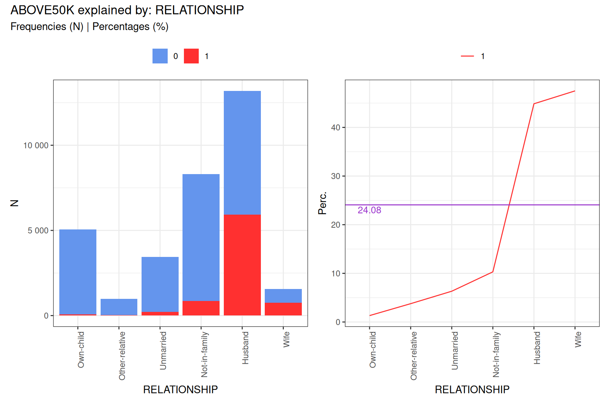

Introduction to the targeter Package
welovedatascience
2025-03-18
Source:vignettes/targeter.Rmd
targeter.RmdIntroduction to targeter
The targeter package is designed for profiling and
analyzing the relationship between a target variable (which you want to
explain or predict) and potential explanatory variables (features). It
provides tools for:
- Automatic variable type detection and classification
- Binning of numeric variables into interpretable categories
- Calculating statistics that highlight relationships with the target
- Computing Weight of Evidence (WOE) and Information Value (IV) for binary targets
- Visualizing these relationships through various plots
targeter is particularly useful for:
- Exploratory data analysis prior to modeling
- Understanding which variables are most predictive of a target
- Investigating how different values of variables affect the target
- Creating insightful visualizations of variable relationships
This vignette demonstrates the basic functionality of
targeter using the included adult dataset and
exploring factors related to income levels.
Getting Started
Let’s start by loading the package and the adult dataset:
# Load required packages
library(targeter)
library(ggplot2)
# Load the adult dataset that comes with the package
data(adult)
# Take a look at the dataset
str(adult)
#> 'data.frame': 32561 obs. of 15 variables:
#> $ AGE : int 39 50 38 53 28 37 49 52 31 42 ...
#> $ WORKCLASS : Factor w/ 9 levels " ?"," Federal-gov",..: 8 7 5 5 5 5 5 7 5 5 ...
#> $ FNLWGT : int 77516 83311 215646 234721 338409 284582 160187 209642 45781 159449 ...
#> $ EDUCATION : Factor w/ 16 levels " 10th"," 11th",..: 10 10 12 2 10 13 7 12 13 10 ...
#> $ EDUCATIONNUM : int 13 13 9 7 13 14 5 9 14 13 ...
#> $ MARITALSTATUS: Factor w/ 7 levels " Divorced"," Married-AF-spouse",..: 5 3 1 3 3 3 4 3 5 3 ...
#> $ OCCUPATION : Factor w/ 15 levels " ?"," Adm-clerical",..: 2 5 7 7 11 5 9 5 11 5 ...
#> $ RELATIONSHIP : Factor w/ 6 levels " Husband"," Not-in-family",..: 2 1 2 1 6 6 2 1 2 1 ...
#> $ RACE : Factor w/ 5 levels " Amer-Indian-Eskimo",..: 5 5 5 3 3 5 3 5 5 5 ...
#> $ SEX : Factor w/ 2 levels " Female"," Male": 2 2 2 2 1 1 1 2 1 2 ...
#> $ CAPITALGAIN : int 2174 0 0 0 0 0 0 0 14084 5178 ...
#> $ CAPITALLOSS : int 0 0 0 0 0 0 0 0 0 0 ...
#> $ HOURSPERWEEK : int 40 13 40 40 40 40 16 45 50 40 ...
#> $ NATIVECOUNTRY: Factor w/ 42 levels " ?"," Cambodia",..: 40 40 40 40 6 40 24 40 40 40 ...
#> $ ABOVE50K : int 0 0 0 0 0 0 0 1 1 1 ...Overview of the adult dataset
The adult dataset contains census information with
various demographic indicators and a binary target variable
ABOVE50K that indicates whether a person’s income exceeds
$50,000 per year.
# Basic summary of the dataset
dim(adult)
#> [1] 32561 15
summary(adult$ABOVE50K)
#> Min. 1st Qu. Median Mean 3rd Qu. Max.
#> 0.0000 0.0000 0.0000 0.2408 0.0000 1.0000
table(adult$ABOVE50K)
#>
#> 0 1
#> 24720 7841The target variable shows that approximately 24.1% of individuals in the dataset have income above $50K.
Basic Usage: Profiling the Target Variable
The core function of the package is targeter(), which
creates a comprehensive profile of the relationship between the target
variable and explanatory variables.
Minimum call is to invoke targeter() with the dataset
and the target variable as following:
# Run a basic profile of the ABOVE50K variable
tar <- targeter(
data = adult,
target = "ABOVE50K"
)
#>
#> INFO:target ABOVE50K detected as type: binary
#> INFO:binary target contains number, automatic chosen level: 1; override using `target_reference_level`
# Look at the structure of the resulting object
class(tar)
#> [1] "targeter" "list"
names(tar)
#> [1] "dataname" "target" "description_data"
#> [4] "description_target" "target_type" "target_stats"
#> [7] "analysis_name" "date" "profiles"
#> [10] "variables" "messages" "session"
#> [13] "target_reference_level"The targeter function has created a comprehensive
profile of our target variable. Let’s explore some of the key insights
we can extract.
Exploring Results: Summary Information
We can use the summary function to get an overview of
the most important variables:
# Get a summary of the targeter profiles object
tar_summary <- summary(tar)
head(tar_summary, 10)
#> varname targetname vartype IV highest_impact
#> <char> <char> <char> <num> <char>
#> 1: RELATIONSHIP ABOVE50K categorical 1.53555268 [-] under-target
#> 2: MARITALSTATUS ABOVE50K categorical 1.33879879 [-] under-target
#> 3: AGE ABOVE50K numeric 1.21843161 [-] under-target
#> 4: OCCUPATION ABOVE50K categorical 0.77613373 [-] under-target
#> 5: EDUCATION ABOVE50K categorical 0.75371125 [-] under-target
#> 6: EDUCATIONNUM ABOVE50K numeric 0.66203770 [-] under-target
#> 7: HOURSPERWEEK ABOVE50K numeric 0.46227884 [-] under-target
#> 8: SEX ABOVE50K categorical 0.30328678 [+] over-target
#> 9: WORKCLASS ABOVE50K categorical 0.16650377 [-] under-target
#> 10: NATIVECOUNTRY ABOVE50K categorical 0.08146288 [-] under-target
#> index.max.level index.max.count index.max.index index.max.props
#> <char> <num> <num> <num>
#> 1: Wife 745 1.973043 0.4751276
#> 2: Married-civ-spouse 6692 1.855609 0.4468483
#> 3: [j] from 48 to 52 926 1.659630 0.3996547
#> 4: Exec-managerial 1968 2.009944 0.4840138
#> 5: Doctorate 306 3.076789 0.7409201
#> 6: [f] from 13 to 16 3909 2.012241 0.4845668
#> 7: [f] from 50 to 56 1670 1.859233 0.4477212
#> 8: Male 6662 1.269620 0.3057366
#> 9: Self-emp-inc 622 2.314475 0.5573477
#> 10: Iran 18 1.738322 0.4186047
#> index.min.level index.min.count index.min.index index.min.props
#> <char> <num> <num> <num>
#> 1: Own-child 67 0.05489901 0.0132202052
#> 2: Never-married 491 0.19085984 0.0459608724
#> 3: [a] from 17 to 21 2 0.00344619 0.0008298755
#> 4: Priv-house-serv 1 0.02787020 0.0067114094
#> 5: Preschool 0 0.00000000 0.0000000000
#> 6: [a] from 1 to 7 151 0.23707052 0.0570888469
#> 7: [b] from 20 to 32 236 0.27637551 0.0665538635
#> 8: Female 1179 0.45455251 0.1094605886
#> 9: Never-worked 0 0.00000000 0.0000000000
#> 10: Holand-Netherlands 0 0.00000000 0.0000000000
#> which_minmax.level
#> <char>
#> 1: 1
#> 2: 1
#> 3: 1
#> 4: 1
#> 5: 1
#> 6: 1
#> 7: 1
#> 8: 1
#> 9: 1
#> 10: 1The summary table shows variables sorted by their Information Value (IV), a measure of their predictive power for the target variable. Higher IV values indicate stronger predictive ability.
Visualizing Relationships
The targeter package provides several visualization
functions to explore the relationships between variables and the
target:
1. Basic variable plots
# Plot the relationship between EDUCATION and income
plot(tar$profiles$EDUCATION)
2. Full variable profile plots
# Generate a comprehensive plot for one of the top variables
fullplot(tar$profiles$RELATIONSHIP)
Weight of Evidence (WOE) and Information Value (IV)
For binary targets like our income variable, the Weight of Evidence (WOE) shows how different categories of a variable influence the target:
# Look at WOE values for a variable
head(tar$profiles$OCCUPATION$woe)
#> WOE cluster
#> Adm-clerical -0.7136414 1
#> Exec-managerial 1.0842668 1
#> Handlers-cleaners -1.5550465 1
#> Prof-specialty 0.9436590 1
#> Other-service -1.9894103 1
#> Sales 0.1501392 1
# Display Information Value for key variables
vars_with_iv <- sapply(tar$profiles, function(x) x$IV)
sorted_iv <- sort(vars_with_iv, decreasing = TRUE)
head(sorted_iv, 10)
#> RELATIONSHIP MARITALSTATUS AGE OCCUPATION EDUCATION
#> 1.53555268 1.33879879 1.21843161 0.77613373 0.75371125
#> EDUCATIONNUM HOURSPERWEEK SEX WORKCLASS NATIVECOUNTRY
#> 0.66203770 0.46227884 0.30328678 0.16650377 0.08146288WOE values tell us: * Positive values: that category is associated with higher probability of the target * Negative values: that category is associated with lower probability of the target * The magnitude indicates the strength of the relationship
Customizing the Analysis
targeter offers many customization options:
# Run a more customized analysis
custom_tar <- targeter(
data = adult,
target = "ABOVE50K",
# Only select a few variables of interest
select_vars = c("AGE", "EDUCATION", "OCCUPATION", "HOURSPERWEEK", "SEX"),
# Customize the binning of numeric variables
nbins = 6,
description_data = "US Census data with demographic and income information",
description_target = "Binary indicator of income above $50k per year",
binning_method = "quantile",
# Control how results are displayed
order_label = "count"
)
#>
#> INFO:target ABOVE50K detected as type: binary
#> INFO:binary target contains number, automatic chosen level: 1; override using `target_reference_level`
# Look at the numeric variable binning
plot(custom_tar$profiles$AGE)
Using Batch Processing for Larger Datasets
For larger datasets with many variables, you can use batch processing:
# Process variables in batches of 5
batch_tar <- targeter(
data = adult,
target = "ABOVE50K",
by_nvars = 2,
verbose = TRUE
)
#>
#> Starting targeter analysis
#> Validating inputs...
#> Processing parameters...
#> Checking dependencies...
#> Preparing data...
#> Analyzing target variable...
#> Input validated.
#> Processing 15 variables in 8 groups (batch size: 2)
#>
#> Processing group: 1 of 8
#> Variables in batch: 2
#> Analyzing explanatory variables...
#> Setting up variable binning...
#> Applying binning to variables...
#> Computing target statistics...
#> Processing variable crossings...
#> Processing variable: AGE
#> Formatting results...
#> INFO:target ABOVE50K detected as type: binary
#> INFO:binary target contains number, automatic chosen level: 1; override using `target_reference_level`
#> - Done
#> Processing group: 2 of 8
#> Variables in batch: 3
#> Analyzing explanatory variables...
#> Setting up variable binning...
#> Applying binning to variables...
#> Computing target statistics...
#> Processing variable crossings...
#> Processing variable: FNLWGT
#> Processing variable: WORKCLASS
#> Formatting results...
#> INFO:target ABOVE50K detected as type: binary
#> INFO:binary target contains number, automatic chosen level: 1; override using `target_reference_level`
#> - Done
#> Processing group: 3 of 8
#> Variables in batch: 3
#> Analyzing explanatory variables...
#> Setting up variable binning...
#> Applying binning to variables...
#> Computing target statistics...
#> Processing variable crossings...
#> Processing variable: EDUCATIONNUM
#> Processing variable: EDUCATION
#> Formatting results...
#> INFO:target ABOVE50K detected as type: binary
#> INFO:binary target contains number, automatic chosen level: 1; override using `target_reference_level`
#> - Done
#> Processing group: 4 of 8
#> Variables in batch: 3
#> Analyzing explanatory variables...
#> Setting up variable binning...
#> Applying binning to variables...
#> Computing target statistics...
#> Processing variable crossings...
#> Processing variable: MARITALSTATUS
#> Processing variable: OCCUPATION
#> Formatting results...
#> INFO:target ABOVE50K detected as type: binary
#> INFO:binary target contains number, automatic chosen level: 1; override using `target_reference_level`
#> - Done
#> Processing group: 5 of 8
#> Variables in batch: 3
#> Analyzing explanatory variables...
#> Setting up variable binning...
#> Applying binning to variables...
#> Computing target statistics...
#> Processing variable crossings...
#> Processing variable: RELATIONSHIP
#> Processing variable: RACE
#> Formatting results...
#> INFO:target ABOVE50K detected as type: binary
#> INFO:binary target contains number, automatic chosen level: 1; override using `target_reference_level`
#> - Done
#> Processing group: 6 of 8
#> Variables in batch: 3
#> Analyzing explanatory variables...
#> Setting up variable binning...
#> Applying binning to variables...
#> Computing target statistics...
#> Processing variable crossings...
#> Processing variable: CAPITALGAIN
#> Processing variable: SEX
#> Formatting results...
#> INFO:target ABOVE50K detected as type: binary
#> INFO:binary target contains number, automatic chosen level: 1; override using `target_reference_level`
#> - Done
#> Processing group: 7 of 8
#> Variables in batch: 3
#> Analyzing explanatory variables...
#> Setting up variable binning...
#> Applying binning to variables...
#> Computing target statistics...
#> Processing variable crossings...
#> Processing variable: CAPITALLOSS
#> Processing variable: HOURSPERWEEK
#> Formatting results...
#> INFO:target ABOVE50K detected as type: binary
#> INFO:binary target contains number, automatic chosen level: 1; override using `target_reference_level`
#> - Done
#> Processing group: 8 of 8
#> Variables in batch: 2
#> Analyzing explanatory variables...
#> Setting up variable binning...
#> Applying binning to variables...
#> Computing target statistics...
#> Processing variable crossings...
#> Processing variable: NATIVECOUNTRY
#> Formatting results...
#> INFO:target ABOVE50K detected as type: binary
#> INFO:binary target contains number, automatic chosen level: 1; override using `target_reference_level`
#> - Done
#> Combining results from 8 successful groups (errors: 0)
#> Profiling complete: 12 variables analyzed
#> Time took 0.21 secsCreating a Report
The targeter package also allows you to create
comprehensive reports:
# Generate a report (not run in the vignette to keep it short)
report(tar, output_file = "adult_income_profile.html")Summary
The targeter package provides powerful tools for
exploratory data analysis and understanding variable relationships. In
this vignette, we’ve covered:
- Creating a basic profile of a target variable
- Exploring the most important variables through summary statistics
- Visualizing relationships between variables and the target
- Understanding Weight of Evidence and Information Value
- Customizing the analysis for specific needs
These basic operations should get you started with u the package. For more advanced functionality, consult the package documentation and additional vignettes.
# Session information for reproducibility
sessionInfo()
#> R version 4.4.3 (2025-02-28)
#> Platform: x86_64-pc-linux-gnu
#> Running under: Ubuntu 24.04.2 LTS
#>
#> Matrix products: default
#> BLAS: /usr/lib/x86_64-linux-gnu/openblas-pthread/libblas.so.3
#> LAPACK: /usr/lib/x86_64-linux-gnu/openblas-pthread/libopenblasp-r0.3.26.so; LAPACK version 3.12.0
#>
#> locale:
#> [1] LC_CTYPE=C.UTF-8 LC_NUMERIC=C LC_TIME=C.UTF-8
#> [4] LC_COLLATE=C.UTF-8 LC_MONETARY=C.UTF-8 LC_MESSAGES=C.UTF-8
#> [7] LC_PAPER=C.UTF-8 LC_NAME=C LC_ADDRESS=C
#> [10] LC_TELEPHONE=C LC_MEASUREMENT=C.UTF-8 LC_IDENTIFICATION=C
#>
#> time zone: UTC
#> tzcode source: system (glibc)
#>
#> attached base packages:
#> [1] stats graphics grDevices utils datasets methods base
#>
#> other attached packages:
#> [1] ggplot2_3.5.1 targeter_1.5.1 data.table_1.17.0
#>
#> loaded via a namespace (and not attached):
#> [1] gtable_0.3.6 jsonlite_1.9.1 compiler_4.4.3 Rcpp_1.0.14
#> [5] xml2_1.3.8 stringr_1.5.1 assertthat_0.2.1 gridExtra_2.3
#> [9] jquerylib_0.1.4 systemfonts_1.2.1 scales_1.3.0 textshaping_1.0.0
#> [13] yaml_2.3.10 fastmap_1.2.0 R6_2.6.1 labeling_0.4.3
#> [17] patchwork_1.3.0 knitr_1.50 htmlwidgets_1.6.4 ggrepel_0.9.6
#> [21] tibble_3.2.1 kableExtra_1.4.0 desc_1.4.3 munsell_0.5.1
#> [25] svglite_2.1.3 bslib_0.9.0 pillar_1.10.1 rlang_1.1.5
#> [29] stringi_1.8.4 cachem_1.1.0 xfun_0.51 fs_1.6.5
#> [33] sass_0.4.9 viridisLite_0.4.2 cli_3.6.4 withr_3.0.2
#> [37] pkgdown_2.1.1 magrittr_2.0.3 digest_0.6.37 grid_4.4.3
#> [41] rstudioapi_0.17.1 lifecycle_1.0.4 vctrs_0.6.5 evaluate_1.0.3
#> [45] glue_1.8.0 farver_2.1.2 ragg_1.3.3 colorspace_2.1-1
#> [49] pacman_0.5.1 rmarkdown_2.29 tools_4.4.3 pkgconfig_2.0.3
#> [53] htmltools_0.5.8.1